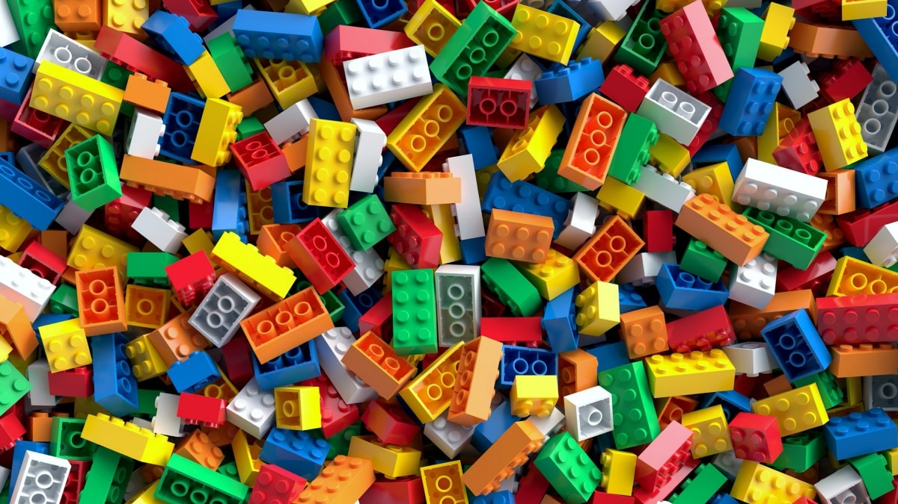
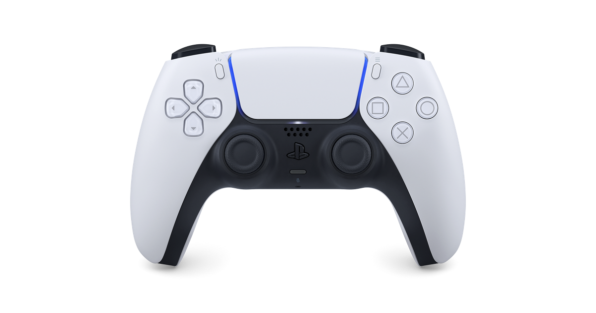

I have done robotics for three years now. I now have done First Tech Challenge, First Lego League, and VEX Robotics: Over Under Challenge. I continue to enjoy robotics because of many different aspects. I enjoy both the thrill of the competitions and when we win along with the enjoyment of working on the robot because I love to make things with my hands, another reason why I love Lego so much.
I love to play with Legos in my free time because playing with Legos allows me to let my creativity and imagination go wild. I am able to build endless things as long as I have the bricks needed to do so. It also allows me to practice engineering and problem-solving when I have a problem that can use Lego bricks to create the solutions I need. It also helps to give me an unfair advantage in games I play with my family to build walls to prevent my family from seeing what I have in my hand.
I love to play video games in my free time and when I can because it allows me to interact with my friends outside of school in our free time without needing to leave the comfort of our own houses. Not only that, but it gives us a friendly competitive spirit and allows us to mess around with each other in many other ways. We also are able to have more freedom to annoy and mess around with each other based on the games and sometimes in ways we can't do so in real life.
